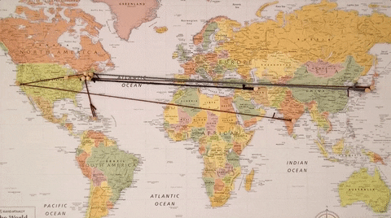

Ce este o activitate extracurriculara? Raspunsul la aceasta intrebare este deja continut in definitia insasi. Aceasta nu este o lectie de scoala obligatorie. Initial, sa presupus ca evenimentul in sine ar trebui sa aiba loc in afara zidurilor salii de clasa. Adica, conceptul de „activita?i extracurriculare” includea excursii, excursii, vizite la teatre, muzee, vacante scolare si olimpiade desfasurate la diferite niveluri. Astazi nu mai este atat de important faptul unde se desfaoara exact evenimentul, O activitate extracurriculara este o activitate care nu este inclusa in programa scolara. Aceasta nu este o lectie - aceasta este caracteristica sa principala.
La fel ca orice adolescent,incerc sa imi folosec timpul liber intr-un mod cat mai productiv, urmand diverse activitati extrascolare. De obicei, aceste activitati ma relaxeaza si ma ajuta sa ma dezvolt pe plan intelectual si social.
Orarul meu obisnuit arata asa:
| ora | activitate |
|---|---|
| 08:00-14:00 | scoala |
| 15:00-17:00 | scoala de arte |
| 18:00-19:00 | ore online de limba evreiasca |
| 19:00-22:00 | timp petrecut cu prietenii |
Iar activitatile mele preferare sunt
Lectura
Lectura reprezinta o forma de petrecere a timpului liber care nu numai ca detensioneaza si relaxeaza, ci si educa si dezvolta mental.Consider ca lectura are o deosebita importanta in viata tinerilor, intrucat aceasta poate constitui un mentor in dezvoltarea psihologica si intelectuala a tinerilor.
Limbi straine
Cunoasterea unei limbi straine inseamna, in primul rand, posibilitati mult mai mari de comunicare si acces la culturi noi. Studierea unei limbi straine iti dezvaluie cum gandesc si ce simt alte societati, care sunt experientele, valorile si modul in care se exprima, te pune fata in fata cu o cultura, pe care, daca o cunosti, poti vedea mult mai clar propria ta societate, plusurile si minusurile ei.
un site ce m-a motivat sa incep studierea limbilor straine si a georgafiei este settera online 
Desen
Desenul este modul universal de expresie care, de-a lungul istoriei artei, a fost perceput din diferite puncte de vedere, atat precum o forma de expresie independenta, cat ?i precum o prima etapa necesara a unor procese apartinand altor genuri artistice (pictura, sculptura, etc.). Din punct de vedere al tehnicii de realizare, se intelege o reprezentare grafica prin linii, puncte, pete sau simboluri cu ajutorul carora se ob?in forme de expresie ale procesului creativ.

Sper ca v-a placut aceasta prezentare a activitatiilo mele. Instagram: instagram